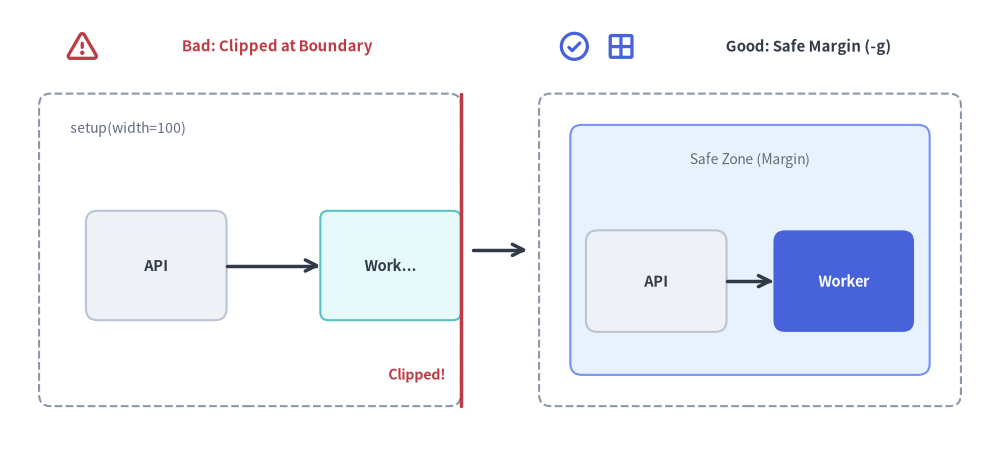
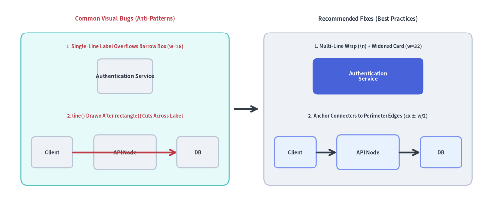

Troubleshooting & Debugging
This guide provides solutions for common rendering errors, coordinate clipping, missing fonts, broken links, and cache anomalies when working with Drawlib.
Use drawlib show -g to inspect coordinate bounds and ensure shapes stay within a safe 5–10 unit perimeter margin:

Source Code
from drawlib.canvas import save, setup
from drawlib.icons import phosphor
from drawlib.lines import line
from drawlib.shapes import rectangle
from drawlib.styles import Styles
from drawlib.text import text
setup(width=128, height=58)
# Left Panel: Bad (Boundary Clipping at x=100)
phosphor.warning((10.5, 52.0), width=4.4, style=Styles.DangerBold)
text((35.5, 52.0), "Bad: Clipped at Boundary", style=Styles.DangerBold.patch(text_size=10.8))
rectangle((32, 26), width=54, height=40, style=Styles.MutedDashed.patch(shape_r=1.5))
text((9, 41.5), "setup(width=100)", style=Styles.Muted.patch(text_size=10.0, halign="left"))
rectangle((20, 24), width=18, height=14, style=Styles.Neutral.patch(shape_r=1.5), text="API", text_style=Styles.DarkBold.patch(text_size=10.5))
# Simulated clipped box at right canvas edge (x=59)
rectangle((50, 24), width=18, height=14, style=Styles.SecondaryNeutral.patch(shape_r=1.0), text="Work...", text_style=Styles.DarkBold.patch(text_size=10.5))
line((59, 6), (59, 46), style=Styles.DangerBold)
text((57, 10), "Clipped!", style=Styles.DangerBold.patch(text_size=10.2, halign="right"))
line((29, 24), (41, 24), arrow_head="->", style=Styles.DarkBold)
# Center Transition Arrow
line((60.5, 26), (67.5, 26), arrow_head="->", style=Styles.DarkBold)
# Right Panel: Good (Safe Perimeter Margin Inspected with -g)
phosphor.check_circle((73.5, 52.0), width=4.4, style=Styles.PrimaryBold)
phosphor.grid_four((79.5, 52.0), width=4.4, style=Styles.PrimaryBold)
text((103.5, 52.0), "Good: Safe Margin (-g)", style=Styles.DarkBold.patch(text_size=10.8))
rectangle((96, 26), width=54, height=40, style=Styles.MutedDashed.patch(shape_r=1.5))
# Inner safe-zone guide
rectangle((96, 26), width=46, height=32, style=Styles.PrimaryNeutral.patch(shape_r=1.5))
text((96, 37.5), "Safe Zone (Margin)", style=Styles.Muted.patch(text_size=10.0))
rectangle((84, 22), width=18, height=13, style=Styles.Neutral.patch(shape_r=1.5), text="API", text_style=Styles.DarkBold.patch(text_size=10.5))
rectangle(
(108, 22),
width=18,
height=13,
style=Styles.PrimaryFlat.patch(shape_r=1.5),
text="Worker",
text_style=Styles.WhiteBold.patch(text_size=10.5),
)
line((93, 22), (99, 22), arrow_head="->", style=Styles.DarkBold)
save()
1. Visual Geometry & Boundary Clipping
Symptom: Shapes or Text Clipped at Canvas Edges
- Cause: In Drawlib's Cartesian coordinate system,
(0, 0)is at the bottom-left. Elements placed with coordinates or radii extending beyondwidthorheightare cropped. - Diagnosis: List the blocks in your document or run
drawlib showwith the-g/--gridflag targeting the block'sfile:name:
The coordinate grid reveals immediately if coordinates exceed# List all drawlib blocks in the Markdown file: uv run drawlib show docs_src/doc.md # Render a specific block with the coordinate grid overlay: uv run drawlib show docs_src/doc.md arch.png -g -o .drawlib/scratch/debug_grid.pngsetup(width=..., height=...). - Solution:
- Increase canvas dimensions in
setup(width=..., height=...). - Or shift shapes inward, leaving at least 5–10 units of breathing room along all perimeter edges.
- Increase canvas dimensions in
Symptom: Label Overflow or Connector Line Cutting Across Node Text
- Cause:
- Single-line labels that are wider than the enclosing rectangle's
widthspill past the left and right borders. - Drawlib uses the Painter's Algorithm (elements are rendered in the exact order they are called). Calling
line()between two node centers after callingrectangle()draws the line right on top of the intermediate node's label.
- Single-line labels that are wider than the enclosing rectangle's
- Solution:
- Insert explicit
\nline breaks ("Authentication\nService") and widen the card (e.g.width=32). - Anchor connectors to shape perimeter edges (
cx ± width/2) or draw background connectors before foreground nodes.
- Insert explicit

Source Code
from drawlib.canvas import save, setup
from drawlib.icons import phosphor
from drawlib.lines import line
from drawlib.shapes import rectangle
from drawlib.styles import Styles
from drawlib.text import text
setup(width=128, height=60)
# Left Panel: Common Visual Bugs (Anti-Patterns)
phosphor.warning((10.5, 54.0), width=4.4, style=Styles.DangerBold)
text((35.5, 54.0), "Visual Bugs (Anti-Patterns)", style=Styles.DangerBold.patch(text_size=10.8))
rectangle((32, 27.0), width=54, height=45, style=Styles.SecondaryNeutral.patch(shape_r=2.0))
# Bug 1: Narrow box where "Auth Service" overflows borders
text((32, 45.0), "1. Label Overflows Narrow Box", style=Styles.DangerBold.patch(text_size=10.0))
rectangle(
(32, 36.2),
width=16,
height=10,
style=Styles.Neutral.patch(shape_r=1.2),
text="Authentication Service",
text_style=Styles.DarkBold.patch(text_size=10.2),
)
# Bug 2: Connector line drawn after node cuts across text label
text((32, 24.8), "2. line() Cuts Across Node", style=Styles.DangerBold.patch(text_size=10.0))
rectangle((13, 14.0), width=12, height=9.5, style=Styles.Neutral.patch(shape_r=1.2), text="UI", text_style=Styles.DarkBold.patch(text_size=10.0))
rectangle((32, 14.0), width=16, height=10.0, style=Styles.Neutral.patch(shape_r=1.2), text="API", text_style=Styles.DarkBold.patch(text_size=10.2))
rectangle((51, 14.0), width=12, height=9.5, style=Styles.Neutral.patch(shape_r=1.2), text="DB", text_style=Styles.DarkBold.patch(text_size=10.0))
line((19, 14.0), (45, 14.0), arrow_head="->", style=Styles.DangerBold)
# Center Transition Arrow
line((60.5, 27.0), (67.5, 27.0), arrow_head="->", style=Styles.DarkBold)
# Right Panel: Recommended Fixes (Best Practices)
phosphor.check_circle((73.5, 54.0), width=4.4, style=Styles.PrimaryBold)
phosphor.stack((79.5, 54.0), width=4.4, style=Styles.PrimaryBold)
text((103.5, 54.0), "Fixes (Best Practices)", style=Styles.DarkBold.patch(text_size=10.8))
rectangle((96, 27.0), width=54, height=45, style=Styles.Neutral.patch(shape_r=2.0))
# Fix 1: Multi-line wrap + widened card (width=32)
text((96, 45.0), "1. Multi-Line + Widened Card", style=Styles.DarkBold.patch(text_size=10.0))
rectangle(
(96, 36.2),
width=32,
height=10.5,
style=Styles.PrimaryFlat.patch(shape_r=1.5),
text="Authentication\nService",
text_style=Styles.WhiteBold.patch(text_size=10.2),
)
# Fix 2: Perimeter-anchored connectors (cx ± w/2) & clean Z-order
text((96, 24.8), "2. Anchor to Edges (cx ± w/2)", style=Styles.DarkBold.patch(text_size=10.0))
rectangle((77, 14.0), width=12, height=9.5, style=Styles.PrimaryNeutral.patch(shape_r=1.2), text="UI", text_style=Styles.DarkBold.patch(text_size=10.0))
rectangle((96, 14.0), width=16, height=10.0, style=Styles.PrimaryNeutral.patch(shape_r=1.2), text="API", text_style=Styles.DarkBold.patch(text_size=10.2))
rectangle((115, 14.0), width=12, height=9.5, style=Styles.PrimaryNeutral.patch(shape_r=1.2), text="DB", text_style=Styles.DarkBold.patch(text_size=10.0))
line((83, 14.0), (88, 14.0), arrow_head="->", style=Styles.DarkBold)
line((104, 14.0), (109, 14.0), arrow_head="->", style=Styles.DarkBold)
save()
2. CLI Diagnostics & Developer Mode
By default, Drawlib formats exceptions into concise, user-friendly error summaries. When debugging deep issues or library internals:
Enable Full Python Tracebacks (--developer)
uv run drawlib --developer build html docs_src/ -o docs_html/
Disables error suppression and prints full Python stack traces with exact file names and line numbers.
Enable Diagnostic Logging (--verbose / --debug)
uv run drawlib --verbose build html docs_src/ -o docs_html/
Outputs timing metrics, image cache hits/misses, and document parsing phases.
3. Font Fallbacks & Missing Glyphs
Symptom: Box Glyphs ("Tofu" □) in CJK or Non-Latin Text
- Cause: The active font does not contain glyphs for Chinese, Japanese, Korean, or specialized Unicode characters.
- Solution:
- Configure a CJK-capable font family (or scaffold with
drawlib init <type> --lang ja):from drawlib.fonts import FontJapanese from drawlib.types import Style jp_style = Style(text_font=FontJapanese.SANSSERIF_REGULAR) - Ensure font assets are pre-cached:
uv run drawlib cache download --fonts
- Configure a CJK-capable font family (or scaffold with
4. Cache Anomalies & Stale Images
Symptom: Changes to External Python Helper Modules Do Not Reflect in Output
- Cause: The SQLite diagram cache (
.drawlib/cache.db) hashes the block's Python code,styles.py,utils.py, and string-literal local asset files. However, if a block imports an external custom Python module outsidestyles.pyandutils.py, editing that external module will not automatically alter the block's SHA-256 cache key. - Solution:
- Force clean re-rendering during build or preview:
uv run drawlib build html docs_src/ -o docs_html/ --no-cache uv run drawlib show docs_src/doc.md arch.png -g -o .drawlib/scratch/preview.png --no-cache - Or purge the SQLite image cache via the CLI (see Caching Architecture & CI/CD):
uv run drawlib cache clear --images
- Force clean re-rendering during build or preview:
5. Broken Link & Missing Asset Auditing
Pre-Flight Verification
Run drawlib serve --check before publishing your documentation site:
uv run drawlib serve docs_html/ --check
Drawlib scans all compiled HTML pages and verifies:
- Every
<a href="...">internal link points to an existing file. - Every
<img>source points to an existing image. - Any orphaned or broken references are reported with exact file locations (exiting with status code
1).
6. Common Build Error Messages & Fixes
| Error Message | Root Cause | Solution |
|---|---|---|
Missing required 'file:...' option in drawlib code block |
An embedded drawlib block in a doc, site, or slide Markdown file omitted the file:<name> attribute. |
Add an explicit filename to the opening code fence (e.g. ```drawlib fold-code center file:service_arch.png caption:"..."). |
Directory build requires "index.md" / "navbar.md" |
Running drawlib build html on a site directory missing mandatory root files, or missing template.html / style.css. |
Ensure index.md, navbar.md, template.html, and style.css exist in docs_src/, or scaffold with drawlib init site. |
Refusing to overwrite input source directory / file |
The -o output path points to the exact same path as the source input (src_abs == dest_abs). |
Specify a separate output directory (e.g. drawlib build markdown docs_src/ -o docs_markdown/). |
Duplicate output image file detected |
Two embedded blocks in the same Markdown file share the same file:<name>, or two .py scripts in images_src/ call save() with the same target path. |
Assign a unique file:<name>.png to each block or script. |
Playwright or Chromium not found |
Running drawlib build pdf without Playwright or the headless Chromium binary installed. |
Run uv add "drawlib[pdf]" (or pip install "drawlib[pdf]") followed by uv run playwright install chromium. |